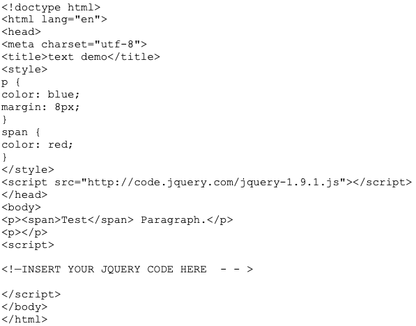
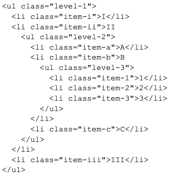
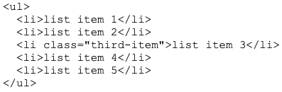
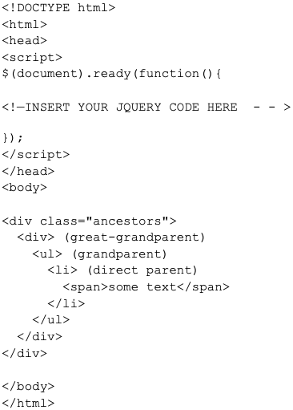

jQuery Quiz 3
1. Find the text in the first paragraph (stripping out the html), then set the html of the last
paragraph to show it is just text (the red bold is gone).

My response here
2. Write jQuery code to create a red background for the level-2 list items.
Sample HTML:

My response here
3. Write jQuery code to select the element that comes immediately before item three and change
its background color to blue.

My response here
4. Let us one additional requirement for the "Go Vegetarian" button of the Webville Eatery Menu described
in Chapter 4 of Head First jQuery: "Turkey" in the ingredient list of any entree is replaced by "Mashed
Potatoes" in the vegetarian version. You may assume there is a class "turkey" that identifies these items
in the list. Describe the changes to the Javascript (jQuery) code to implement this new requirement.
My response here
5. Write Javascript (jQuery) code to change the color of the parent and grandparent list items of the span of text ("some text") in the following to green.

My response here